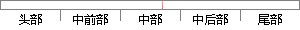

var flag = checkType.
片段位置图

相似结果|
相似片段 1："Info="操作成功！"用户的修改：var formscount=1;var selectoption=-1;function EditUser(flag)//flag 用来记录表单次序{var
相似片段 2： = document.getElementsByName("vc_contactemail")[0];var b_area = document.getElementById("b_area");flag
相似片段 3： = document.getElementsByName("vc_faxes")[0];var flag = 0;flag = document.getElementById("name_req");if(flag && flag.value == 1
相似片段 4：);var v=record.data[this.dataIndex];var flag=false;if (typeof (v)=='string'){if (v.toUpperCase()=="TRUE"){flag=false;}else{flag=true;}}else{flag=!
相似片段 5： str.substring(i,j);function submitForm(){var flag = true;var usern = /^[a-zA-Z0-9_@]{1
相似片段 6：", {var params;var flag = $(this). ;var sysID = $(this). ;var dynamicTitle = $(this) find("h2").html
相似片段 7：))/(Number(mo)/2.54);lo=Number(dw)+(10-(Number(mw)/2.54)*Number(dw))/(Number(mw)/2.54);var flag
相似片段 8：部分实现代码如40下所示：//保存填写拨付单据function btnBillFillClick(){var flag = false;var dwStd =getObject("dwStd
相似片段 9：转换的代码如下：function Convert_Json_Obj_to_String(JSONObj){var flag = JSONObj instanceof Array;var str
相似片段 10：");var flag = false;for(var n=0;n
|
※ 片段修改建议 ※
近似词参考：